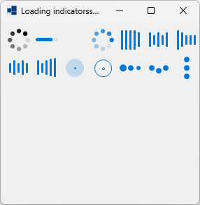
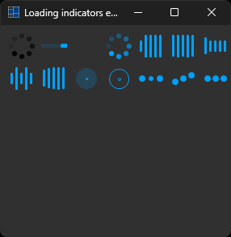
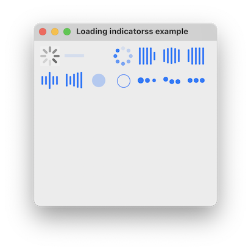
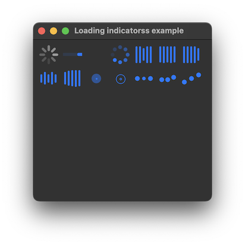
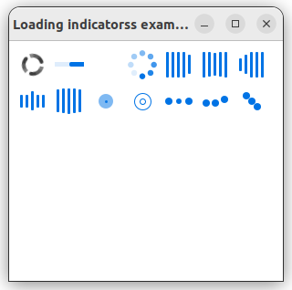
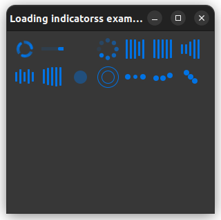

|
xtd
0.2.0
|
Loading...
Searching...
No Matches
loading_indicators.cpp
xtd::forms::loading_indicator represents a Windows control to display a loading indicator animation.
- Windows
- 

- macOS
- 

- Gnome
- 

#include <xtd/drawing/system_colors>
#include <xtd/forms/application>
#include <xtd/forms/form>
#include <xtd/forms/loading_indicators>
using namespace xtd::forms;
namespace loading_indicators_example {
public:
form1() {
text("Loading indicatorss example");
fore_color(xtd::drawing::system_colors::accent());
for (auto item : {&loading_indicator1, &loading_indicator2, &loading_indicator3, &loading_indicator4, &loading_indicator5, &loading_indicator6, &loading_indicator7, &loading_indicator8, &loading_indicator9, &loading_indicator10, &loading_indicator11, &loading_indicator12, &loading_indicator13}) {
}
};
}
private:
loading_indicator loading_indicator2 = loading_indicators::bar(*this, {50, 10});
loading_indicator loading_indicator3 = loading_indicators::circle_bars(*this, {90, 10});
loading_indicator loading_indicator4 = loading_indicators::circle_blinks(*this, {130, 10});
loading_indicator loading_indicator5 = loading_indicators::five_lines(*this, {170, 10});
loading_indicator loading_indicator6 = loading_indicators::five_lines_center(*this, {210, 10});
loading_indicator loading_indicator7 = loading_indicators::five_lines_chronological(*this, {250, 10});
loading_indicator loading_indicator8 = loading_indicators::five_lines_pulse(*this, {10, 50});
loading_indicator loading_indicator9 = loading_indicators::five_lines_wave(*this, {50, 50});
loading_indicator loading_indicator10 = loading_indicators::pulse(*this, {90, 50});
loading_indicator loading_indicator11 = loading_indicators::pulse_outline(*this, {130, 50});
loading_indicator loading_indicator12 = loading_indicators::three_balls(*this, {170, 50});
loading_indicator loading_indicator13 = loading_indicators::three_balls_bouncing(*this, {210, 50});
loading_indicator loading_indicator14 = loading_indicators::three_balls_rotation(*this, {250, 50});
};
}
auto main()->int {
application::run(loading_indicators_example::form1 {});
}
static xtd::drawing::color accent()
Gets a xtd::drawing::color structure that is the color used to accent a control.
Represents a window or dialog box that makes up an application's user interface.
Definition form.h:52
Represents a loading indicator control.
Definition loading_indicator.h:29
Provides data for the xtd::forms::control::mouse_up, xtd::forms::control::mouse_down,...
Definition mouse_event_args.h:32
The xtd::forms namespace contains classes for creating Windows-based applications that take full adva...
Definition about_box.h:13
Generated on Sun Dec 31 2023 22:09:17 for xtd by Gammasoft. All rights reserved.